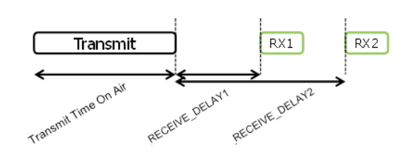

第3章 PHY 帧格式
LoRa 有上行消息和下行消息。
3.1 上行消息
上行消息是由终端发出，经过一个或多个网关转发给网络服务器。
上行消息使用 LoRa 射频帧的严格模式，消息中含有 PHDR 和 PHDR_CRC 。载荷有CRC校验来保证完整性。
PHDR，PHDR_CRC 及载荷 CRC 域都通过射频收发器加入。
上行 PHY:
| Preamble | PHDR | PHDR_CRC | PHYPayload | CRC |
图2.上行PHY帧格式
3.2 下行消息
下行消息是由网络服务器发出，经过单个网关转发给单个终端。
下行消息使用射频帧的严格模式，消息中包含 PHDR 和 PHDR_CRC。
下行 PHY:
| Preamble | PHDR | PHDR_CRC | PHYPayload |
图3.下行PHY帧格式
3.3 接收窗口
每个上行传输后终端都要开两个短的接收窗口。接收窗口开始时间的规定，是以传输结束时间为参考。

图4.终端接收时隙的时序图
3.3.1 第一接收窗口的信道，数据速率和启动
第一接收窗口 RX1 使用的频率和上行频率有关，使用的速率和上行速率有关。RX1 是在上行调制结束后的 RECEIVE_DELAY1秒（+/- 20微秒）打开。上行和 RX1 时隙下行速率的关系是按区域规定，详细描述在[LoRaWAN地区参数]文件中。默认第一窗口的速率是和最后一次上行的速率相同。
3.3.2 第二接收窗口的信道，数据速率和启动
第二接收窗口 RX2 使用一个固定可配置的频率和数据速率，在上行调制结束后的 RECEIVE_DELAY2秒（+/- 20微秒）打开。频率和数据速率可以通过 MAC 命令(见 第5章)。默认的频率和速率是按区域规定，详细描述在[LoRaWAN地区参数]文件中。
3.3.3 接收窗口的持续时间
接收窗口的长度至少要让终端射频收发器有足够的时间来检测到下行的前导码。
3.3.4 接收方在接收窗口期间的处理
如果在任何一个接收窗口中检测到前导码，射频收发器需要继续激活，直到整个下行帧都解调完毕。如果在第一接收窗口检测到数据帧，且这个数据帧的地址和MIC校验通过确认是给这个终端，那终端就不必开启第二个接收窗口。
3.3.5 网络发送消息给终端
如果网络想要发一个下行消息给终端，它会精确地在两个接收窗口的起始点发起传输。
3.3.6 接收窗口的重要事项
终端在第一或第二接收窗口中收完下行消息后，或者在第二接收窗口失效之后(第一或第二窗口均未收到下行消息)，才能再发起另一个上行消息。
3.3.7 其他协议的收发处理
节点在LoRaWAN收发窗口阶段可以收发其他协议，只要终端能满足当地要求以及兼容LoRaWAN协议。